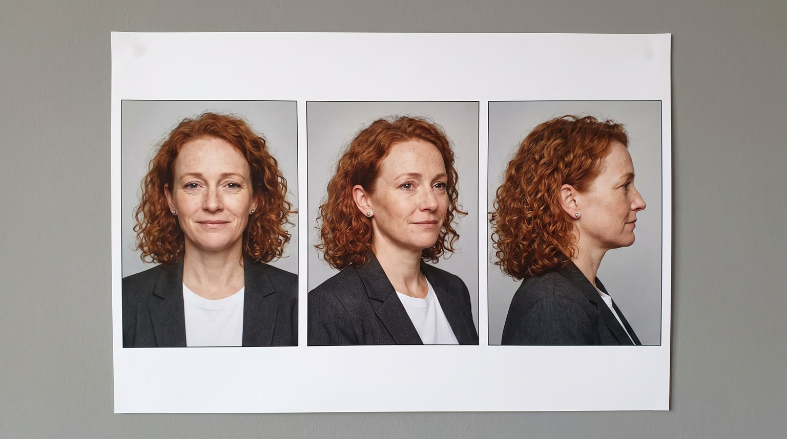
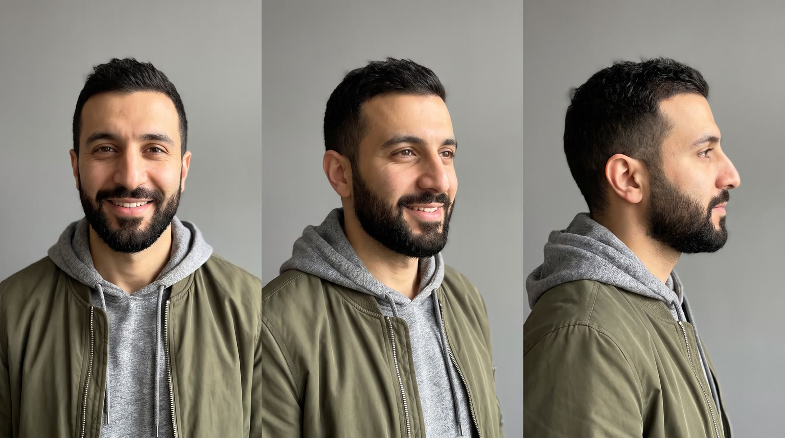
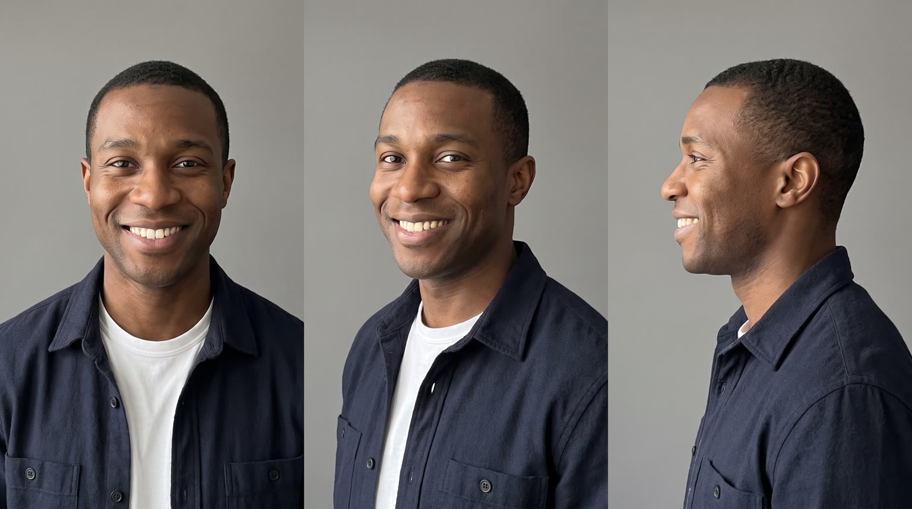
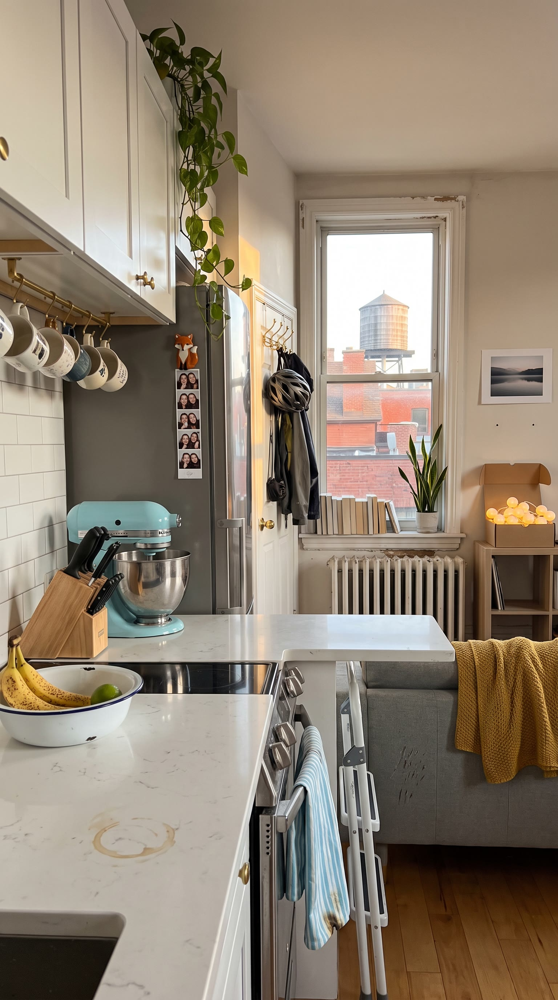
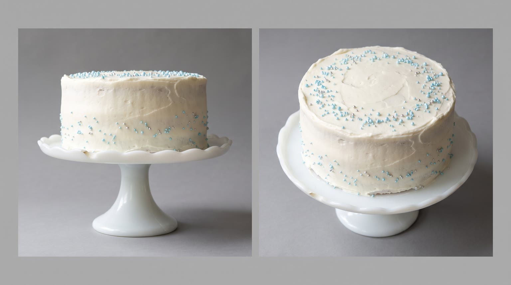
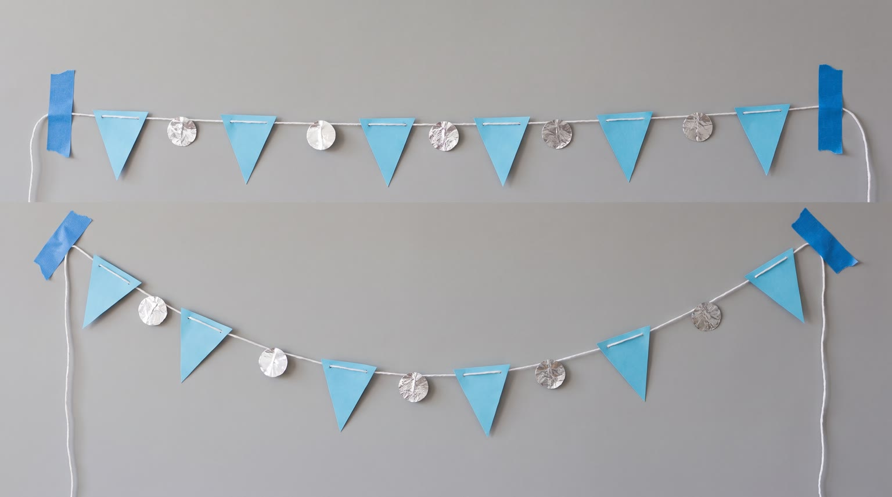
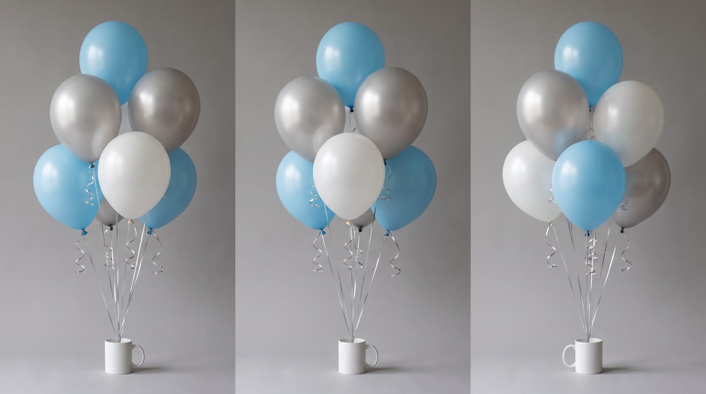

All templates · template.json · original storyboard
Text-message / group chattext_message-01-surprise-threadThe Surprise Thread
5pm, two hours before a surprise 30th: the group chat is on fire, the decor and the cake are still in the bag, and the friend who promised to do both just walked in from work running on empty. Her reply to the thread is {{product.name}}.
Fit by product type
| ingested | great | the fridge-door grab before a big job is the most natural beat in the world |
| applied | good | a quick refresh at the hallway mirror (balm, mist, hair, skincare) before guests arrive |
| worn | good | swapping work flats and blazer for the product (sneakers, socks, a comfy layer, glasses) by the door |
| handheld | great | the gadget that makes the job fast: glue gun, speaker, earbuds, balloon pump, phone accessory |
| carried | good | the bag by the door that has everything she needs; works best for totes, backpacks and organiser cases |
| home | good | the home product does the heavy lifting in the living room (string lights, speaker, lamp, the sofa that seats everyone); not for large appliances or products for other rooms |
| consumable | great | the pack from the cupboard that makes it quick: frosting, decor kit, snacks, refills |
Refuses: products for children; alcohol; phones or apps whose value is their screen UI (every screen here is blank and the chat is built in code); anything that cannot plausibly live in a small city apartment
Cast, world and props (shipped with the template)







- Leah Marsh rents a fourth-floor one-bedroom above a bakery on a Toronto side street; the radiator knocks twice every time the heat comes on and the building smells of bread by 5am.
- Leah, Omar and Jules met eleven years ago in the same first-year residence hall; a strip of four photo-booth pictures from that first week is still on her fridge.
- Omar started the group thread three weeks ago with eight friends in it. Leah volunteered in the first hour: decor and the cake, the same two-layer vanilla cake she has made for every birthday in the group since university, on her grandmother's milk-glass cake stand.
- Jules finishes his shift at 6:40. The cover story is that Omar is driving him over to pick up a cordless drill he lent Leah in the spring. Maya, the fourth friend, is the one who sees Jules leave early.
- The balloons and the paper for the garland were bought on Tuesday and have sat untouched in their bag by the fruit bowl all week.
Script: what each line must do
Right column is the worked example for Red Bull Sugarfree.
| Time | Speaker | Intent (template) | Example |
|---|---|---|---|
| 2.6-4.6 | leah | Fixed: Decor AND cake. Tonight. Max 5 words. Delivery: reading off the phone, deflating, half a laugh | Decor AND cake. Tonight. |
| 5.3-7.2 | omar | Fixed: Two hours, Leah. You good? Max 6 words. Delivery: voice note, fast, mock-panicked, phone held flat near his mouth | Two hours, Leah. You good? |
| 12.2-14.6 | leah | Product line: she says {{product.name}} (or its short spoken form), then the ONE benefit from product.benefits that gets her through two hours of decor and cake (energy, focus, speed, comfort, a fresh face, confidence), then a one-word rally to herself. benefit comes only from product.benefits, reworded no further than person and tense; brand spelled phonetically in the video prompt using product.phonetic; she says it to herself, never to camera Max 7 words. Delivery: to herself right after the product moment, rallying, a small grin | Red Bull Sugarfree. Okay. Focus. |
| 21.2-21.9 | leah | Fixed: Surprise! Max 1 words. Delivery: shouted together with Omar and a friend, jumping out | Surprise! |
| 22.4-23.8 | jules | Fixed: You did all this? Max 5 words. Delivery: laughing, stunned, hand on his head | You did all this? |
| 27.2-29.4 | leah (off camera) | Tagline: product.tagline if the page has one, otherwise a 3 to 5 word line that ties the product to pulling it off. It is also typed as her last chat bubble. lower case when it appears as a chat bubble; no claim that is not in product.benefits Max 6 words. Delivery: warm voiceover, smiling, party noise under it | Wiiings without sugar. |
Product-adjacent props by type
| ingested | the silver fridge's door shelf, the product chilled beside a carton of eggs and a plain glass bottle of water |
| applied | the narrow shelf under the small round mirror by the front door, where the product lives |
| worn | the low wooden shoe rack and brass hook rack by the front door, where the product waits |
| handheld | the kitchen junk drawer of tape rolls, batteries and takeout menus, with the product on top |
| carried | the brass hook rack by the front door, the product hanging beside her rain jacket |
| home | the living room corner by the grey sofa where the product is set up (a seat product replaces the grey sofa) |
| consumable | the upper kitchen cupboard, a pack of the product on the bottom shelf |
Shots and how the product appears for each type
S01 · 0 to 2.2 s · absent
A plain black phone lies face-up on a white stone counter beside a set of keys, buzzing, its dark screen glowing softly; notification banners stack in over it (post).
S02 · 2.2 to 5.0 s · absent
Leah, just in from work, tote bag still on her shoulder, reads the phone and deflates; on the counter a bag of plain balloons and a plain box of cake mix wait.
S03 · 5.0 to 7.4 s · absent
Omar in the driver's seat of his parked car records a voice note, phone held flat below his mouth, a bag of party supplies on the passenger seat.
S04 · 7.4 to 9.4 s · reveal
Leah thumbs a quick reply, sets the phone down and goes for the one thing that gets her through: the product.
| ingested | pulling open the door of the silver fridge, cool white fridge light on her face, {{product.visual}} chilled on the door shelf |
| applied | turning to the small round mirror above the brass hook rack by the front door, where {{product.visual}} sits on the narrow shelf beneath it |
| worn | kicking off her work flats by the front door and reaching toward the low shoe rack and hook rack, where {{product.visual}} is waiting |
| handheld | pulling open the kitchen junk drawer, where {{product.visual}} sits on top of the tangle of tape rolls and batteries |
| carried | reaching for {{product.visual}} hanging on the brass hook rack by the front door beside her rain jacket |
| home | turning from the counter toward the living room, where {{product.visual}} is set up in its place by the grey sofa (if it is a seat, it stands where the grey sofa was) |
| consumable | opening the upper kitchen cupboard, where a pack of {{product.visual}} sits on the bottom shelf |
S05 · 9.4 to 11.6 s · hero
Macro insert: her hand takes the product from where it lives, in the local light.
| ingested | a woman's hand with short natural nails and a silver thumb ring taking {{product.visual}} off a white fridge door shelf, label facing camera, cold condensation drops, lit by the cool fridge light, a carton of eggs and a plain glass bottle of water blurred beside it |
| applied | a woman's hand with short natural nails and a silver thumb ring lifting {{product.visual}} off the narrow shelf under the hallway mirror, label facing camera, warm hallway light |
| worn | a woman's hand with short natural nails and a silver thumb ring lifting {{product.visual}} off the shoe rack or hook by the front door, turning it once so its details catch the window light |
| handheld | a woman's hand with short natural nails and a silver thumb ring lifting {{product.visual}} out of the kitchen junk drawer, logo or label to camera, late afternoon window light |
| carried | a woman's hand with short natural nails and a silver thumb ring unhooking {{product.visual}} from the brass hook rack by the door, logo to camera |
| home | a close detail of {{product.visual}} in the living room as a woman's hand with short natural nails and a silver thumb ring switches it on, unfolds it or smooths it, the product lit as the brightest thing in frame |
| consumable | a woman's hand with short natural nails and a silver thumb ring taking one {{product.visual}} out of its pack on the cupboard shelf, label to camera |
S06 · 11.6 to 14.8 s · in_use
She uses the product, says the product line to herself, pockets the phone and rolls up her sleeves.
| ingested | at the white kitchen counter, holding {{product.visual}} at chest height with the label facing camera, just after a first sip or bite, a small rallying grin |
| applied | at the small mirror by the front door, applying {{product.visual}} with two quick practised moves, then holding it at chest height with the label facing camera, a small rallying grin |
| worn | by the front door, now wearing {{product.visual}}, giving it one quick tug or adjust so it sits right, a small rallying grin |
| handheld | at the white kitchen counter, switching on or snapping open {{product.visual}}, then holding it at chest height with the logo facing camera, a small rallying grin |
| carried | at the white kitchen counter, {{product.visual}} open in front of her showing everything she needs neatly inside, one hand on it, a small rallying grin |
| home | in the living room beside {{product.visual}}, switching it on or giving it one firm pat, a small rallying grin |
| consumable | at the white kitchen counter, tearing open one {{product.visual}}, then holding the pack at chest height with the label facing camera, a small rallying grin |
S07 · 14.8 to 17.4 s · absent
Montage one: on a step stool in the living room she tapes up a blank paper garland while a cluster of sky-blue and silver balloons floats beside her.
S08 · 17.4 to 20.0 s · absent
Montage two: she sweeps white frosting smooth on a round cake and scatters sky-blue sprinkles; string lights flick on behind.
S09 · 20.0 to 24.5 s · absent
Lights off, the door opens, Jules steps in; Leah, Omar and a friend jump up from behind the sofa under the string lights and balloons; Jules laughs in disbelief.
S10 · 24.5 to 30 s · hero
The photo she sends: the product by the finished cake under warm party bokeh; the frame shrinks into a photo bubble sent to the thread (post), then the caption bubble and the endcard.
| ingested | {{product.visual}} standing upright on the white stone kitchen counter beside the finished cake, label facing camera, condensation drops |
| applied | {{product.visual}} standing upright on the white stone kitchen counter beside the finished cake, label facing camera |
| worn | {{product.visual}} set neatly on the seat of the white step stool pulled up to the counter, its best side to camera, the finished cake on the counter just behind it |
| handheld | {{product.visual}} resting on the white stone kitchen counter beside the finished cake, logo facing camera |
| carried | {{product.visual}} standing upright on the white step stool pulled up to the counter, logo facing camera, the finished cake on the counter just behind it |
| home | {{product.visual}} in the decorated living room under the string lights, the finished cake on a plate on the low table in front of it |
| consumable | the open pack of {{product.visual}} standing upright on the white stone kitchen counter beside the finished cake, label facing camera |
Generation units (templated prompts)
U1 · 10 s
9:16 candid smartphone footage, natural handheld phone-camera look, realistic late afternoon light. Every phone screen is dark and blank with no interface, icons or text. Shot 1 (0 to 2.2 s): locked overhead close-up of a plain black phone lying face-up on a white stone counter, buzzing three times, the dark screen glowing faintly. Shot 2 (2.2 to 5 s): @Image1 (Leah, copper-red curls, charcoal blazer, tote bag on her shoulder) in the kitchen of @Image3 picks up the phone, screen tilted away, reads it and deflates: "Decor AND cake. Tonight." Shot 3 (5 to 7.4 s): @Image2 (Omar, beard, olive bomber) in the driver's seat of a parked car records a voice note, phone held flat below his mouth: "Two hours, Leah. You good?" Shot 4 (7.4 to 10 s): Leah thumbs a quick reply, sets the phone down, {{action.S04}}. Native sound: phone buzz, tote bag, car interior hush, the product's surroundings. No music. No text on screen.U2 · 6 s · exact-risk
9:16 candid smartphone footage. Shot 1 (0 to 2.2 s): locked macro insert, {{action.S05}}; the product matches @Image1 exactly, undistorted. Shot 2 (2.2 to 6 s): medium close-up of @Image2 (Leah, copper-red curls, sleeves pushed up) in the apartment, {{action.S06}}, and says to herself with a rallying grin: "{{line.L3}}" (say the brand as {{product.phonetic}}). Keep the product's shape, colours and label exactly as @Image1. Native sound: the product's own sound (a click, a snap, a pour, a rustle) if it has one, her voice, room hum. No music.U3 · 10 s
9:16 candid smartphone footage, early evening turning to night. Shot 1 (0 to 2.6 s): @Image1 (Leah) on a step stool in the living room of @Image4 tapes up a plain white paper garland with no writing, plain sky-blue and silver balloons beside her. Shot 2 (2.6 to 5.2 s): high three-quarter close-up of her hands smoothing white frosting on a round cake and scattering sky-blue sprinkles, no writing on the cake, warm string lights click on behind. Shot 3 (5.2 to 10 s): wide in the dark decorated living room, the front door on the right opens and @Image3 (Jules, navy overshirt) steps in; Leah, @Image2 (Omar) and a young woman friend jump up from behind the sofa shouting "Surprise!" with party poppers; Jules laughs, hand on his head: "You did all this?" Nobody holds a bottle, cup or glass. Upright, level horizon. Native sound: tape, spatula, lights clicking, door, shout, laughter, poppers. No music. No text.
U4 · 6 s · exact-risk
9:16 candid phone-photo look, held almost still with a tiny handheld drift: {{action.S10}}; the product matches @Image1 exactly and does not move or change. The cake is white frosted with sky-blue sprinkles and no writing, silver confetti, warm string-light bokeh and blurred party guests moving behind. Keep the upper third soft and empty. Native sound: party chatter and laughter in the next room, a phone shutter click. No music, no text.